Kerberos 协议详解¶
Kerberos协议是由麻省理工学院提出的一种网络身份验证协议，提供了一种在开放的非安全网络中认证识别用户身份信息的方法。它旨在通过使用密钥加密技术为客户端/服务端应用程序提供强身份验证。Kerberos 是西方神话中守卫地狱之门的三头犬的名字。之所以使用这个名字是因为 Kerberos 需要三方的共同参与才能完成一次认证流程。目前主流使用的 Kerberos 版本为KerberosV5 版本，Windows、Linux 和 Mac OS 均支持 Kerberos 协议。
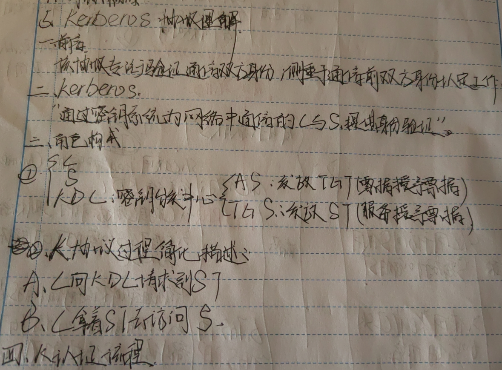
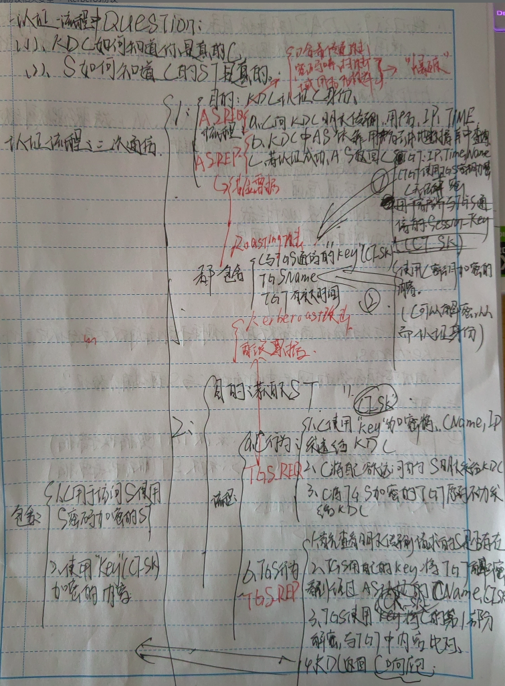
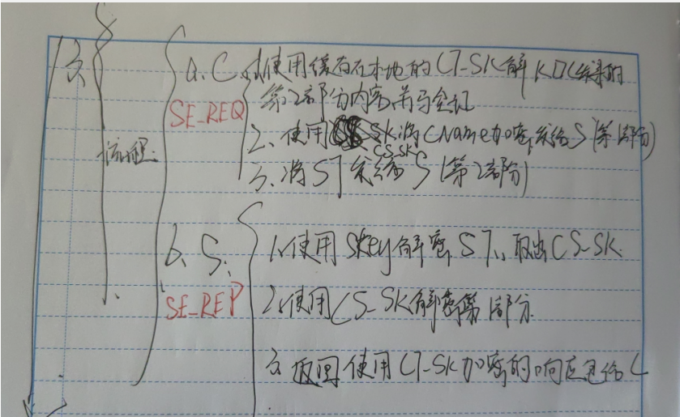
Kerberos 基础¶
在 Kerberos 协议中，主要有以下三个角色：
- 访问服务的客户端：Kerberos 客户端是代表需要访问资源的用户进行操作的应用程序，例如打开文件、查询数据库或打印文档。每个 Kerberos 客户端在访问资源之前都会请求身份验证。
- 提供服务的服务端：域内提供服务的服务端，服务端都有一个独一的SPN。
- 提供认证服务的 KDC(Key Distribution Center，密钥分发中心)：KDC 密钥发行中心是一种网络服务，它向活动目录域内的用户和计算机提供会话票据和临时会话密钥，其服务帐户为
krbtgt。KDC 作为活动目录域服务ADDS 的一部分运行在每个域控制器上。
这里说一下 krbtgt 帐户，该用户是在创建活动目录时系统自动创建的一个账号，其作用是 KDC 密钥发行中心的服务账号，其密码是系统随机生成的，无法正常登陆主机。
如图所示，可以看到 krbtgt 帐户的信息。
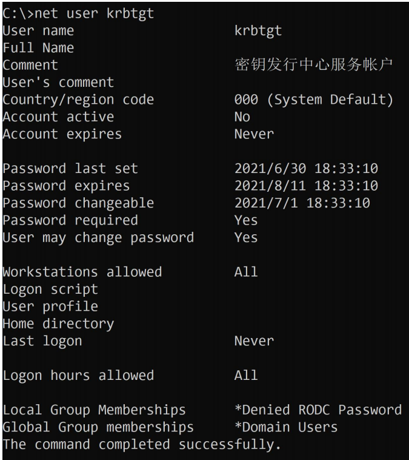
Kerberos是一种基于票据Ticket的认证方式。客户端想要访问服务端的某个服务，首先需要购买服务端认可的ST服务票据(Service Ticket).也就是说，客户端在访问服务之前需要先购买好票，等待服务验票之后才能访问。但是这张票并不能直接购买，需要一张TGT认购权证(Ticket Granting Ticket).也就是说，客户端在买票之前必须先获得一张TGT认购权证。TGT认购权证和ST服务票据均是由KDC(密钥分发中心)发放；因为KDC是运行在域控制器上的，所以说TGT认购权证和ST服务票据均是由域控发放的。
Kerberos 使用 TCP/UDP 88 端口进行认证，使用 TCP/UDP 464 端口进行密码重设。
如图所示，可以看到域控制器 AD01 上开放的 88 和 464 端口。
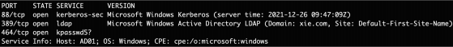
Kerberos 中一些名词的简称及含义：
简称 全拼
DC Domain Controller，域控
krbtgt KDC 密钥发行中心服务账户
KDC Key Distribution Center：密钥分发中心，由域控担任
AD Active Directory：活动目录，里面包含域内用户数据库
AS Authentication Service：认证服务
TGT Ticket Granting Ticket：TGT 认购权证，由 KDC 的 AS 认证服务发放
TGS Ticket Granting Service：票据授予服务
ST Service Ticket：ST 服务票据，由 KDC 的 TGS 票据授予服务发放
Kerberos 协议有两个基础认证模块：AS_REQ & AS_REP 和 TGS_REQ &TGS_REP ，以及微软扩展的两个认证模块 S4U 和 PAC 。S4U 是微软为了实现委派而扩展的模块，分为 S4U2Self 和 S4U2Proxy 。在 Kerberos 最初设计的流程里只说明了如何证明客户端的真实身份，但是并没有说明客户端是否有权限访问该服务，因为在域中不同权限的用户能够访问的资源是不同的。因此微软为了解决权限这个问题，引入了 PAC (Privilege Attribute Certificate，特权属性证书)的概念。
在分析 AS_REQ & AS_REP 和 TGS_REQ & TGS_REP 之前，我们先来看看什么是 PAC。
PAC 特权属性证书¶
PAC (Privilege Attribute Certificate，特权属性证书)，其中所包含的是各种授权信息、附加凭据信息、配置文件和策略信息等。例如用户所属的用户组， 用户所具有的权限等。在最初的 RFC1510 中规定的标准 Kerberos 认证过程中并没有PAC，微软在自己的产品中所实现的 Kerberos 流程加入了 PAC 的概念，因为在域中不同权限的用户能够访问的资源是不同的，因此微软设计 PAC 用来辨别用户身份和权限.
在一个正常的 Kerberos 认证流程中，KDC 返回的 TGT 认购权证和 ST 服务票据中都是带有 PAC 的。这样做的好处就是在以后对资源的访问中， 服务端再接收到客户请求的时候不再需要借助 KDC 的帮助提供完整的授权信息来完成对用户权限的判断， 而只需要根据请求中所包含的 PAC 信息直接与本地资源的 ACL 相比较做出裁决。
PAC 在 kerberos 中的优缺点¶
那么 PAC 的存在究竟给我们的验证过程带来了哪些优点，亦或是缺点呢？
正如上面所提到的那样，PAC 的引入其实带来了很多的优点。客户端在访问网络资源的时候服务端不再需要向 KDC 查询授权信息， 而是直接在本地进行 PAC 信息与 ACL 的比较。从而节约了网络资源。
如图所示， 在没有 PAC 的情况下，Server 与 KDC 之间必须进行用户授权信息的查询与返回 ：
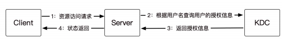
当引入 PAC 之后则变成了如图所示：
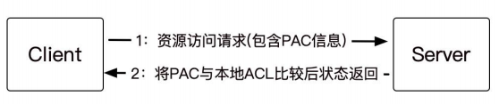
但是，PAC 的引入并不是百利而无一害的，PAC 在用户的认证阶段引入会导致认证耗时过长。Windows Kerberos 客户端会通过 RPC 调用 KDC 上的函数来验证 PAC 信息，这时候用户会观察到在服务器端与 KDC 之间的 RPC 包流量的增加。而另一方面， 由于 PAC 是微软特有的一个特性，所以启用了 PAC 的域中将不支持装有其他操作系统的服务器， 制约了域配置的灵活性。并且在 2014 年，由于 PAC 的安全性导致产生了一个域内极其严重的提权漏洞 MS14-068
Kerberos协议流程¶
大致流程如下：
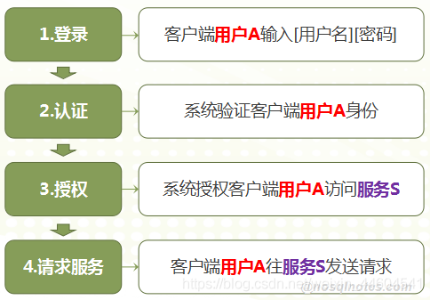
参与的角色有：
- Client: Application Client 应用客户端
- AS: Authentication Server 用来认证用户身份,认证服务器，专门用来认证客户端的身份并发放客户用于访问TGS的TGT(票据授予票据)
- TGS: Ticket-Granting Service 用来授权服务访问,票据授予服务器，用来发放整个认证过程以及客户端访问服务端时所需的服务授予票据(ticket)
- SS: Service Server 用户所请求的服务
- 客户端(Client)：发送请求的一方
- 服务端(Server)：接收请求的一方
- 密钥分发中心(Key distribution KDC),密钥分发中心又分为两个部分，分别是：AS,TGS.
Kerberos协议的应用流程可以概括为以下几步:
- 用户登录域并向域控制器的认证服务(AS)发送用户名与域名,请求 Ticket Granting Ticket(TGT)。
- AS使用用户密码(或NTLM哈希)进行加密运算,生成TGT并返回用户。TGT中包含用户与TGS之间的会话密钥。
- 用户访问应用或资源时,向域控制器的票证授予服务(TGS)提交TGT以及应用服务器的ID,请求服务票证(ST)。
- TGS验证TGT有效性,使用TGT中的会话密钥对用户与应用服务器之间的新会话密钥加密,生成ST并返回用户。
- 用户向应用服务器提交ST以验证身份。应用服务器使用TGS提供的会话密钥解密ST,获取会话密钥并验证用户身份。
- 应用服务器针对该用户的这次访问生成访问令牌(Access Token),并将其包含在响应消息返回用户。
- 用户随后每次访问应用服务器都需要提供 Access Token 进行身份验证。应用服务器解密令牌,使用会话密钥验证用户身份并对请求授权。
- Access Token 和 ST 在一定时间后过期,用户需重新向TGS申请新的ST来继续访问。TGS发出新的ST时也重新生成会话密钥。
- 用户定期更换密码时,所有TGT、ST、Access Token等也随之无效,用户需重新认证并申请,以确保安全。
打个比方，整个过程就是：你想坐飞机，但是机场告诉你必须有机票（TGT）才可以登机，接着你去购票处（AS）出示身份证（Client name）购买了一张机票（TGT），你拿着机票登机，在检票处（TGS）出示机票，服务人员告诉了你的座位号（Ticket），然后就可以坐到自己的位置上。
我们可以通过以下几个例子来形象理解Kerberos协议的应用流程:
- TGT获取:这就像到电影院买票,先去售票处买一张可以观看所有电影的通用票。TGT就像这个通用电影票,可以访问Kerberos领域内的所有服务。
- ST申请:这就像通用票允许进入电影院,但每个电影场次都需要买对应的电影票方可入场。ST就像观看各个电影的门票,每个服务都需要对应的ST方可访问。
- 会话密钥:这就像电影开始时放映员会发放3D眼镜,只有带上特定电影的3D眼镜才能正常观看。Kerberos的会话密钥就像3D眼镜,只有使用正确的密钥才能解密通信内容。
- 更新机制:这就像电影院会定期更新电影列表,旧票无法使用;3D眼镜也需要定期更换。Kerberos的更新机制就像这些措施,可以定期更新TGT、ST、令牌等,使过期信息无法使用。
- 密码更换:这就像电影院换票系统时需要观众全部办理新的会员卡。Kerberos的密码更换会使之前的认证信息全部无效,必须全部重新申请。
- 细粒度访问控制:这就像不同电影有不同的票价和观众限制。Kerberos为每个服务生成不同的ST,就像每个电影有不同的门票,实现了详细的访问控制。
- 单点登录:这就像会员卡可以观看电影院内全部电影。TGT实现了单点登录,一个认证后可以访问Kerberos领域内的全部服务。
Kerberos 实验¶
为了更直观的分析 Kerberos 协议，接下来我们用普通域帐户 xie/hack 使用impacket 工具请求 win10 机器的 cifs 服务票据 ，然后远程 SMB 连接，在该过程中使用 WireShark 进行抓包。
实验环境如下：
- 用户(xie/hack)：10.211.55.2
- 域内主机(Win10)： 10.211.55.16
- 域控(AD01)： 10.211.55.4
impacket 使用命令如下：
#使用 hack 账号密码请求 win10 的 cifs 服务的 ST 服务票据
python3 getST.py -dc-ip 10.211.55.4 -spn cifs/win10.xie.com xie.com/hack:P@ss1234
#导入该 ST 服务票据
export KRB5CCNAME=hack.ccache
#使用 smb 远程连接 win10
python3 smbexec.py -no-pass -k win10.xie.com
如图所示，可以看到在请求了服务票据后，成功远程 SMB 连接 win10 机器。
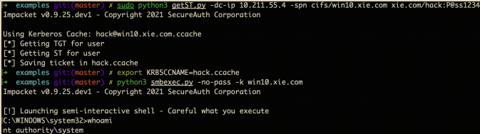
在这个过程中，我们使用 WireShark 抓包，来进一步的分析 Kerberos 协议。如图所示，是该过程的抓包图：
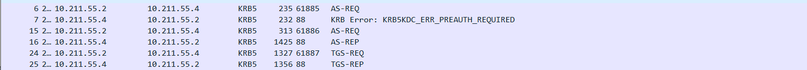
整个 Kerberos 认证流程如图所示：
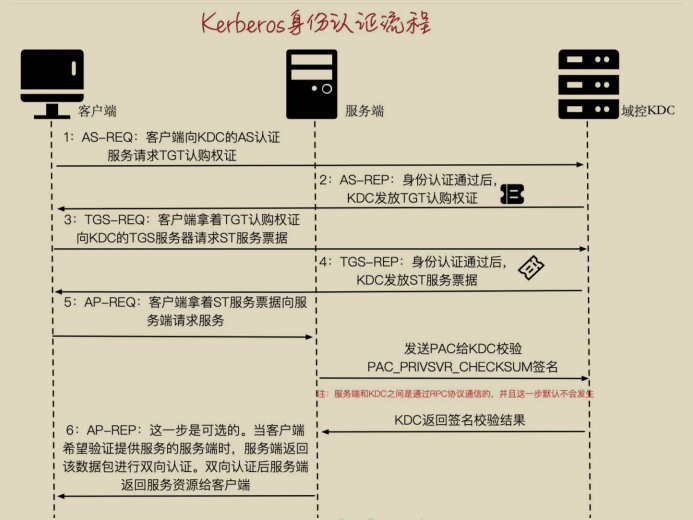
下面我们来具体分析 Kerberos 认证流程的每个步骤：
AS-REQ & AS-REP¶
我们先来看看 AS-REQ&AS-REP 请求部分，也就是 WireShark 抓的第一、二个包，如图所示：
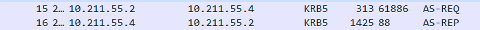
如图所示，是一个简易的 AS-REQ&AS-REP 请求过程图，便于我们直观的了解AS-REQ&AS-REP 请求过程。
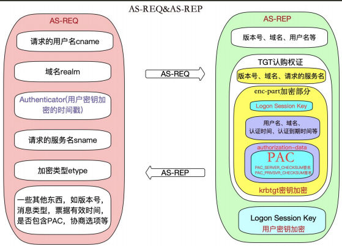
1.AS-REQ 请求包分析¶
AS-REQ：当域内某个用户想要访问域内某个服务时，于是输入用户名和密码，本机就会向 KDC 的 AS 认证服务发送一个 AS-REQ 认证请求。该请求包中包含如下信息：
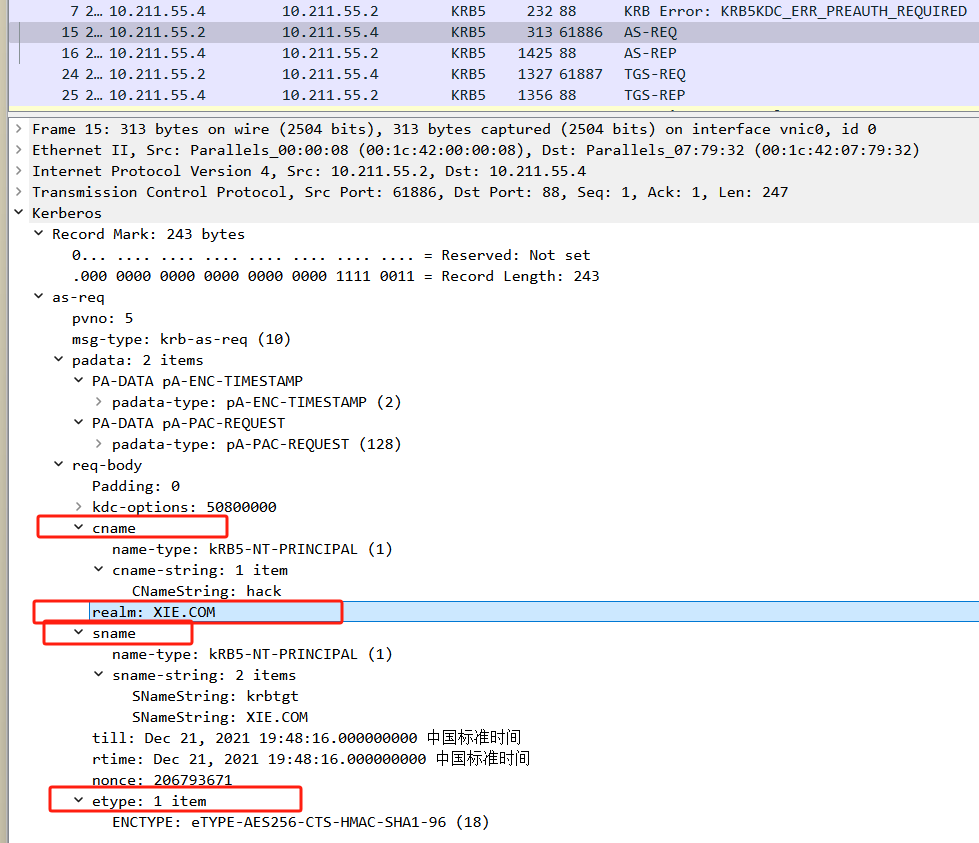
- 请求的用户名(cname)。
- 域名(realm)。
- Authenticator：一个抽象的概念，代表一个验证。这里是用户密钥加密的时间戳。
- 请求的服务名(sname)：AS-REQ 这个阶段请求的服务都是 krbtgt。
- 加密类型(etype)。
- 以及一些其他信息：如版本号，消息类型，票据有效时间，是否包含PAC，协商选项等。
2.AS-REP 回复包分析¶
AS-REP：当 KDC 的 AS 认证服务接收到客户端发来的 AS-REQ 请求后，从活动目录数据库中取出该用户的密钥，然后用该密钥对请求包中的Authenticator预认证部分进行解密，如果解密成功，并且时间戳在有效的范围内，则证明请求者提供的用户密钥正确。KDC 的 AS 认证服务在成功认证客户端的身份之后，发送AS-REP 响应包给客户端。AS-REP 响应包中主要包括如下信息：
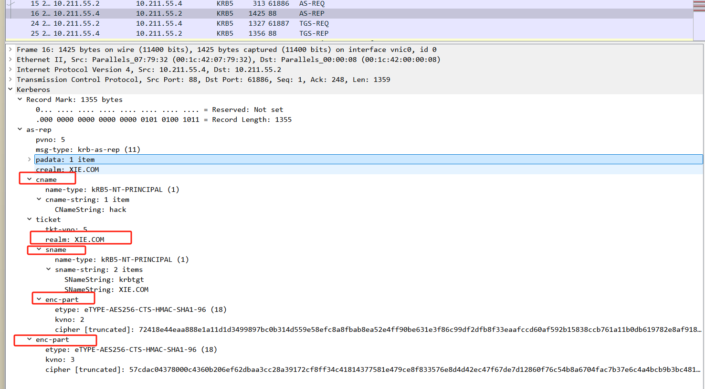
- 请求的用户名(cname)。
- 域名(crealm)。
- TGT 认购权证：包含明文的版本号，域名，请求的服务名，以及加密部分enc-part。加密部分用 krbtgt 密钥加密。加密部分包含
Logon SessionKey、用户名、域名、认证时间、认证到期时间和authorization-data。authorization-data中包含最重要的 PAC 特权属性证书(包含用户的 RID，用户所在组的 RID) 等。 - enc_Logon Session Key：使用用户密钥加密
Logon Session Key后的值，其作用是用于确保客户端和 KDC 下阶段之间通信安全。也就是 AS- REP 中最外层的enc-part。 - 以及一些其他信息：如版本号，消息类型等。
TGS-REQ & TGS-REP¶
我们再来看看 TGS-REQ&TGS-REP 请求部分，也就是 WireShark 抓的第三、四个包，如图所示：
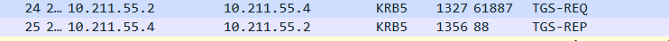
如图所示，是一个简易的 TGS-REQ&TGS-REP 请求过程图，便于我们直观的了解 TGS-REQ&TGS-REP 请求过程。
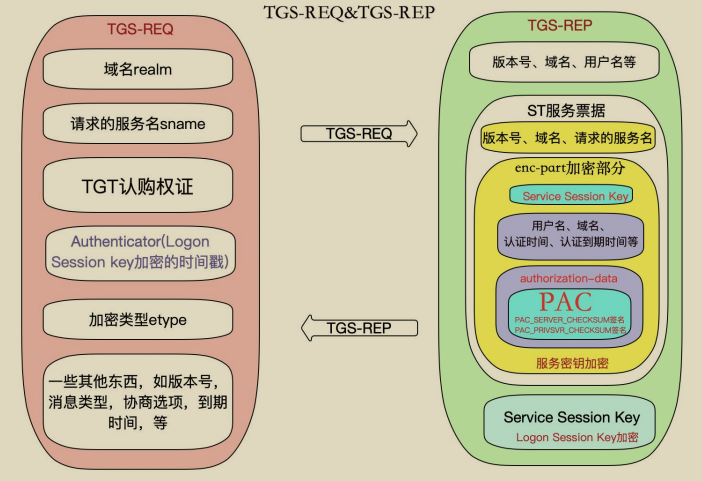
Kerberos 协议的安全问题¶
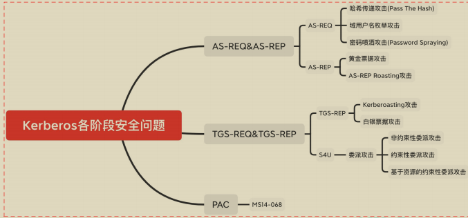
在 AS-REQ 请求阶段，是用用户密码 Hash 或 AES Key 加密的时间戳。因此当只获得了用户密码 Hash 时，也可以发起 AS-REQ 请求，所以也就造成了 PTH 哈希传递攻击；当只获得用户密码的 AES Key 时，也可以发起 AS-REQ 请求，所以也就造成了 PTK 密钥传递攻击。
而 AS-REQ 请求包中 cname 字段的值代表用户名，这个值存在和不存在，返回的包有差异，所以可以用于枚举域内用户名，这种攻击方式被称为 域内用户枚举攻击 (当未获取到有效域用户权限时，可以使用这个方法枚举域内用户)。并且当用户名存在，密码正确和密码错误时，返回的包也不一样，所以可以进行用户名密码爆破。但是在实战中，渗透测试人员通常都会使用一种被称为 密码喷洒（Password Spraying）的攻击方式来进行测试和攻击。对密码进行喷洒式的攻击，这个叫法很形象，因为它属于自动化密码猜测的一种。这种针对所有用户的自动密码喷洒通常是为了避免帐户被锁定，因为针对同一个用户的连续密码猜测会导致帐户被锁定。所以只有对所有用户同时执行特定的密码登录尝试，才能增加破解的概率，消除帐户被锁定的概率。普通的爆破就是用户名固定，爆破密码，但是密码喷洒是用固定的密码去跑所有的用户名。
在 AS-REP 阶段，由于返回的 TGT 认购权证是由 krbtgt 用户的密码 Hash 加密的，因此如果我们拥有 krbtgt 的密码 hash 就可以自己制作一个 TGT 认购权证，这种攻击方式被称为黄金票据攻击。同样，在 TGS-REP 阶段，TGS_REP 里面的 ST 服务票据是使用服务的 hash 进行加密的，如果我们拥有服务的 hash，就可以签发任意用户的 ST 服务票据，这个票据也被称为白银票据，这种攻击方式被称为白银票据攻击。相较于黄金票据，白银票据使用要访问服务的 hash，而不是krbtgt 的 hash。
在 AS-REP 阶段，Login session key 是用用户密码 Hash 加密的。对于域用户，如果设置了“Do not require Kerberos preauthentication”不需要预认证选项，此时攻击者向域控制器的 88 端口发送 AS_REQ 请求，此时域控不会做任何验证就将 TGT 认购权证 和 该用户 Hash 加密的 Login Session Key 返回。因此，攻击者就可以对获取到的 用户 Hash 加密的 Login Session Key 进行离线破解，如果破解成功，就能得到该用户的密码明文，这种攻击方式被称为 AS-REPRoasting 攻击。
在 TGS-REP 阶段，由于 ST 服务票据是用服务 Hash 加密的。因此，如果我们能获取到 ST 服务票据，就可以对该 ST 服务票据进行利息破解，得到服务的Hash，这种攻击方式被称为 Kerberoasting 攻击。这个问题存在的另外一个因素是因为用户向 KDC 发起 TGS_REQ 请求，不管用户对服务有没有访问权限，只要TGT 认购权证正确，那么 KDC 都会返回 ST 服务票据。其实 AS_REQ 里面的服务就是 krbtgt，也就是说这个攻击方式同样可以用于爆破 AS_REP 里面的 TGT 认购权证，但是之所以没见到这种攻击方式是因为 krbtgt 的密码是随机生成的，爆破不出来。